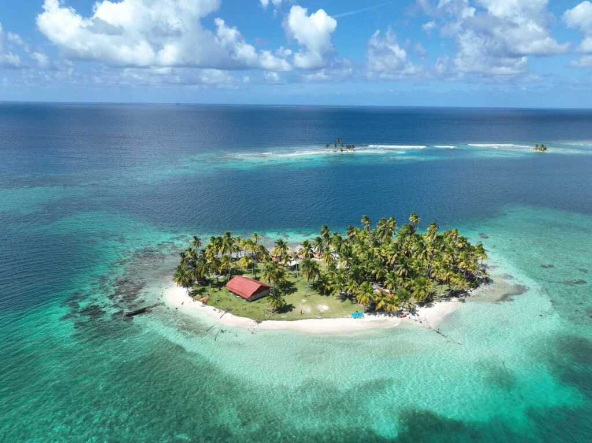
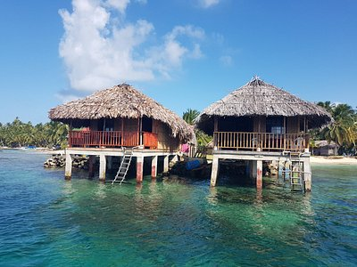
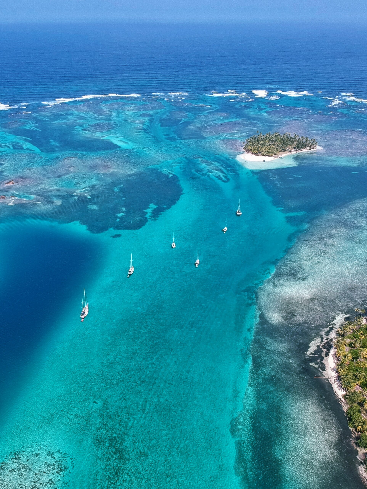
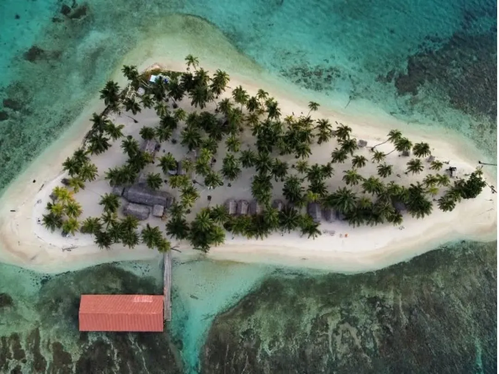

With more than 350 islands, San Blas is full of secrets waiting to be discovered. While popular anchorages like Isla Perro and Chichime are well-known, the magic often lies in the lesser-visited spots where you can swim alone, snorkel untouched reefs, and meet the Kuna community in authentic settings. Here are some of the best hidden places to anchor and explore in San Blas in 2025.

Isla Pelicano — A Deserted Paradise
Known to few, this tiny island offers calm anchorage and a perfect coral reef just meters from the shore. Ideal for snorkelers and photographers.

Rio Sidra — Where Jungle Meets the Sea
A unique anchorage where you can sail up close to the mainland and start a jungle hike. Perfect for those who want to combine sea and rainforest.

Cayos Holandeses — The Hidden Caribbean
This group of islands feels like a dream. Crystal-clear waters, sandbars, and very few boats make it a top choice for private sailing experiences.

Isla Iguana — For Cultural Encounters
Isla Iguana is a small but vibrant Kuna village where travelers can experience the heart of San Blas culture. Guests are welcomed with warm smiles, traditional dishes like coconut rice and fish, and the chance to purchase beautifully hand-stitched molas. It’s the perfect stop for anyone who wants more than a sailing trip — a genuine connection with the local community.
Tips for Finding Your Own Hidden Spot
Talk to your captain — locals know safe anchorages others overlook. Arrive early in the day to secure the best spot. Respect the environment — don’t anchor on coral reefs, use sandy bottoms. Bring cash — many communities sell handmade molas or fresh coconuts.